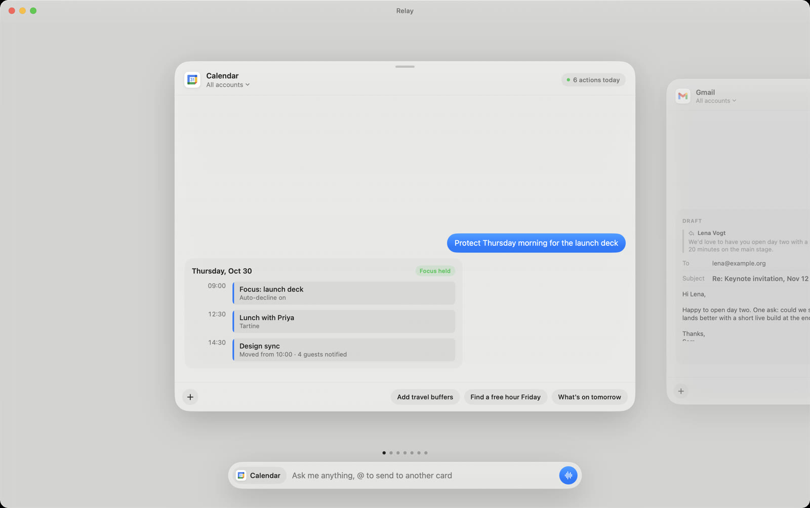
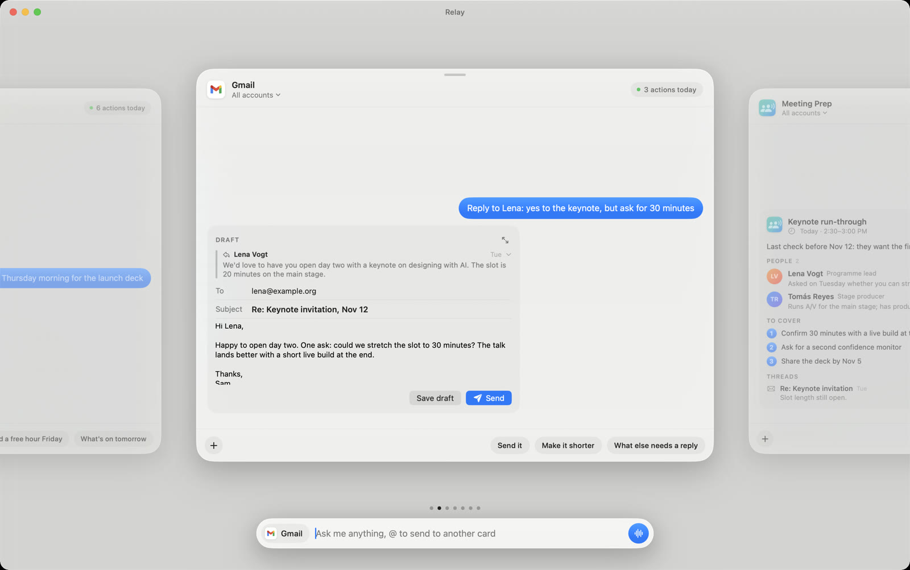
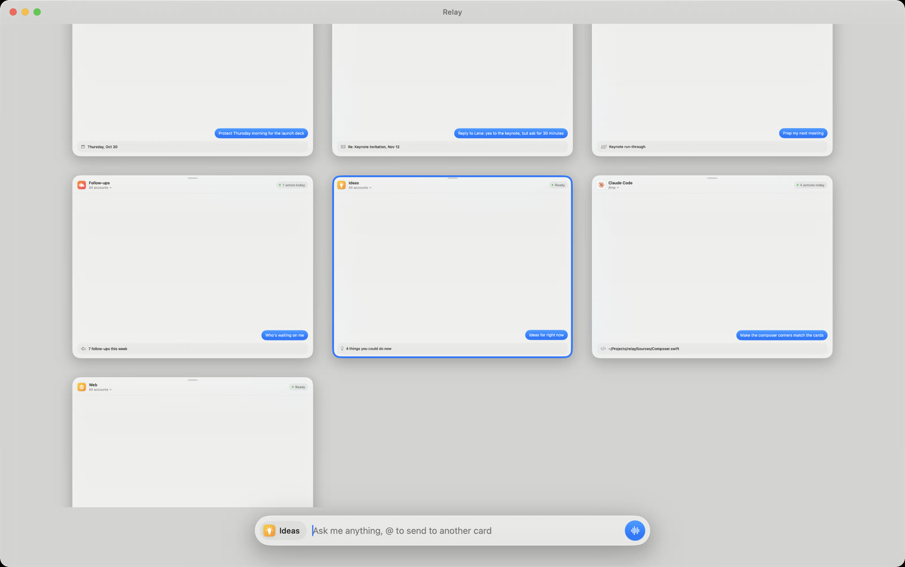
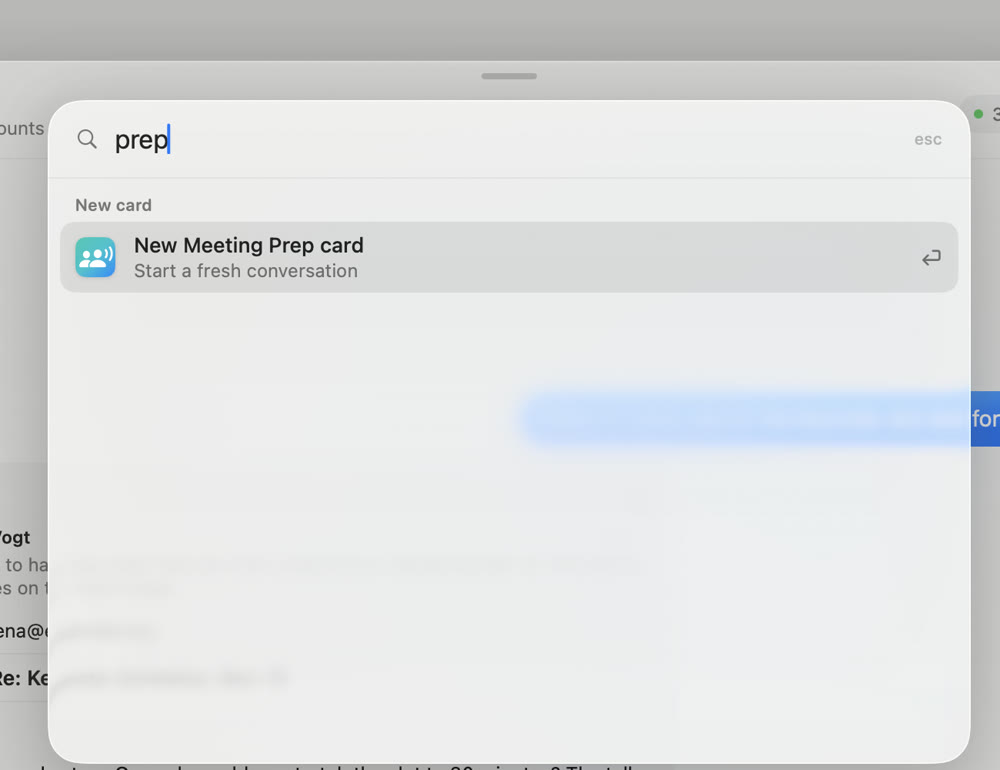
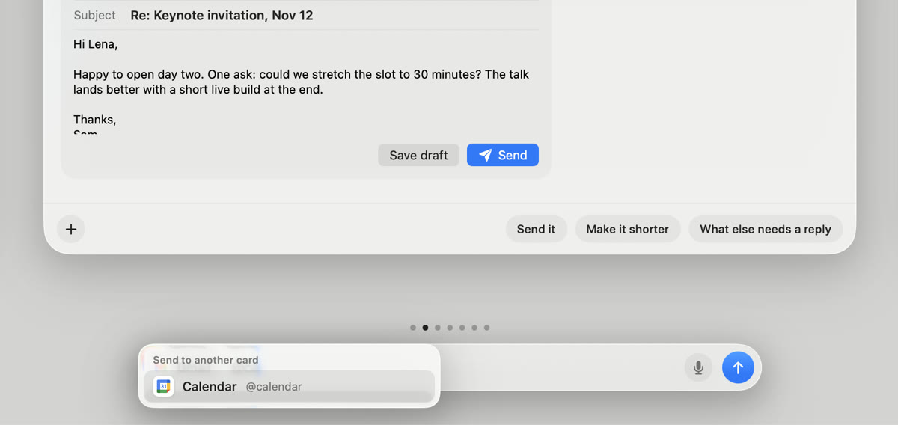
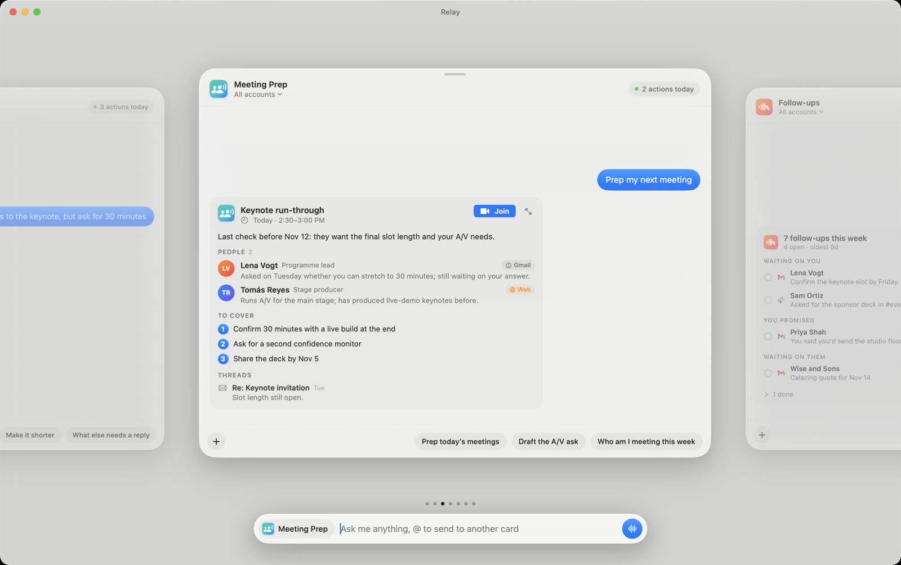
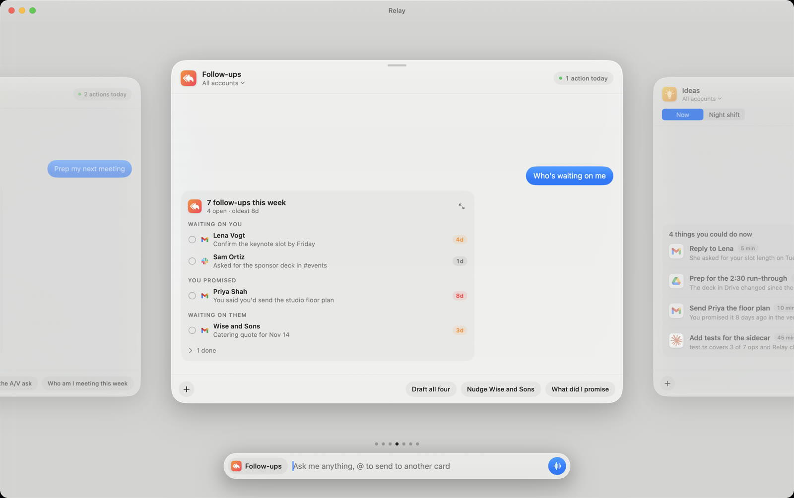
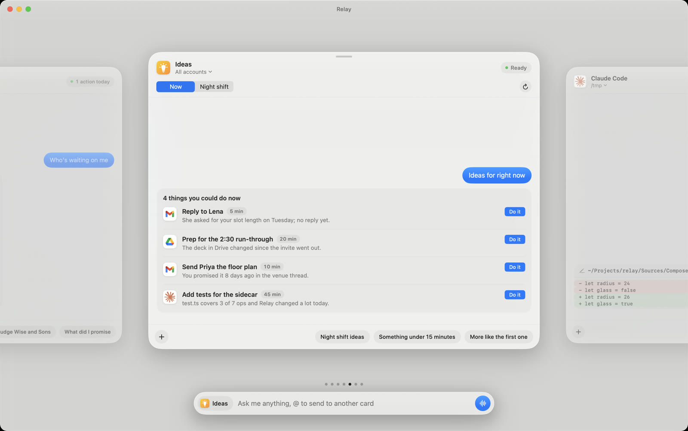
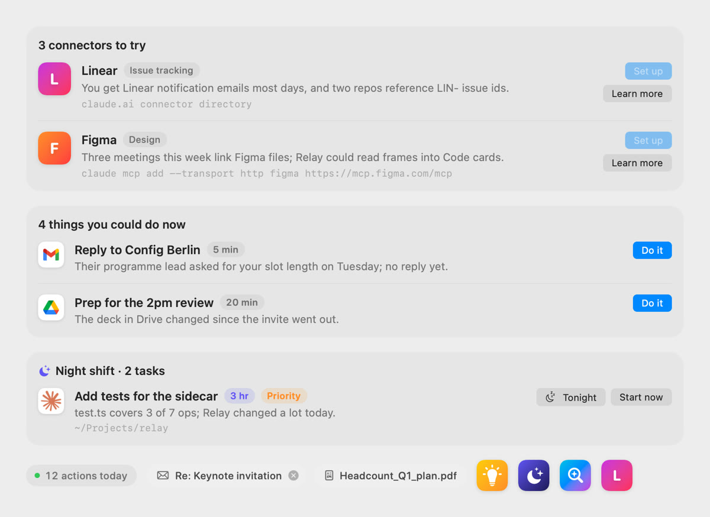
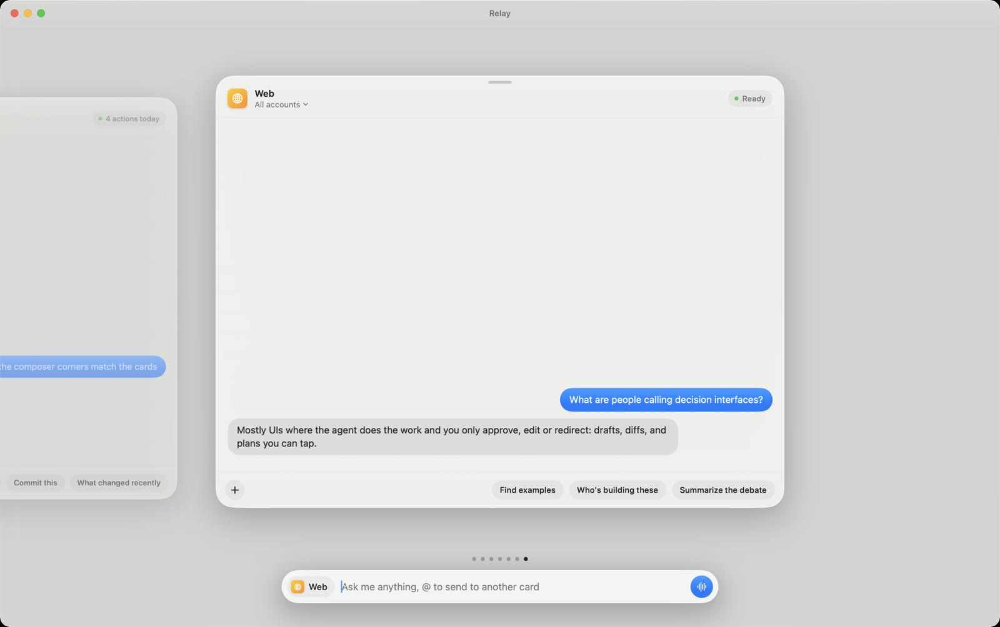

Open Relay
A decision interface for your agents, and the code to build your own.
I built the multi-agent interface I wanted.
— Felix Haas (@felixhhaas) September 2, 2026
A month ago Felix Haas posted 44 silent seconds of an interface I couldn't stop thinking about. I wanted to use it, so I spent two weeks building it on top of Claude Code. This is what came out, why I think it matters, and the code, which is now open source.
It's about an 8-minute read. The repo is in Part 6 if you just want to run it.
TL;DR
- Agents do the work now. Your job is deciding. A chat window makes you read a wall of text to find the decision. A decision interface hands you the decision: a draft with a Send button, a diff to approve, a list with Do it on each line.
- Relay gives every connector its own card. Gmail, Calendar, Slack, Notion, a code folder. One composer at the bottom talks to whichever card is in front, so context comes from where you are, not what you type.
- The best cards aren't connectors. Meeting Prep, Follow-ups, Ideas and Discover each do one job across your tools and end in something you can act on.
- It runs on the Claude you already have. No API key: a Bun sidecar drives your installed, logged-in
claudethrough the Agent SDK, and every card is a normal Claude Code session. - Open Relay is the cleaned-up version. MIT licensed, about 11,600 lines of Swift and TypeScript, at github.com/michaelraspuzzi/open-relay.
Part 1
Chat Is the Wrong Shape
Here's how most of us work with agents today. You open a chat. You type what you want. The agent goes off, calls six tools, and comes back with four paragraphs. Somewhere in paragraph three is the thing it needs from you: "Want me to send this?"
That was fine when the model was answering questions. It's the wrong shape now that the model is doing the work. When the agent does the work, the only part left for you is the decision. Send or don't. Approve the change or push back. Do this first, or that.
So the interface should be built around the decision. The agent's output shouldn't be prose about an email; it should be the email, with To, Subject and a Send button. Not a description of a code change, but the diff. Not "you have a few people waiting on you," but the list, with a button on each line that drafts the reply.
Felix's video was the clearest picture of that I'd seen.1 Every app is a card. Every card is its own little chat. And what comes back isn't text, it's a calendar day with "Focus held" on it, a draft, a board. You glance, you decide, you swipe to the next one.
Part 2
One Card per World
Relay is a Mac app built around that idea. Each connector you have in Claude (Gmail, Calendar, Slack, Notion, Drive, a code folder) gets its own glass card in a carousel. The cards next to the one in front peek in from the sides, so you always know what's one swipe away.
There's one composer at the bottom. The chip on its left shows which card you're talking to, and it changes as you swipe. That's the part I'd steal for anything: one conversation per surface, one input for all of them. You never type "in my calendar, …" because you're already standing in the calendar.

Each reply comes back as a block you can act on. In Gmail that's the draft, quoting the email it answers, with Save draft and Send. Send doesn't send right away: you get eight seconds and an Undo bar first, because the cost of a wrong send is much higher than the cost of waiting.

When one card touches another card's world (Gmail creates a calendar event, say), a toast appears in the top right, the other card gets a note, and its agent hears about it the next time you talk to it. The cards are separate, but they aren't strangers.
Part 3
Moving Between Cards
If you have ten cards, getting between them has to be free. Relay is keyboard-first, with the trackpad as a close second:
- Swipe with two fingers, or ⌘← ⌘→, or ← → when the composer is empty.
- Jump straight to a card with ⌘1 through ⌘9.
- Zoom out to a grid of every card with a pinch or ⌘G, and click one to zoom back in.
- ⌘K to switch to a card or start a new one by name.
- @ a card from anywhere. Type
@calendar hold 2h for thisin Gmail: you stay put, the Calendar card gets this conversation as context, and its answer comes back as a toast. - Drag any block, file or text onto another card. It waits in the composer with that card's verb ("Put this on my calendar"), and Return sends it.



Part 4
The Custom Cards
I started with one card per connector, like the video. The surprise was that the cards I use most aren't connectors at all. They're jobs: each one reaches across several tools, does one thing, and ends in a block with buttons on it.
Meeting Prep
Preps your next meeting with other people in it. It reads the event, pulls each attendee's recent threads from Gmail (and Slack if you have it), and only searches the web when it knows almost nothing about someone, saying so when it does. It never looks up people from your own company. The brief ends with a Join button.

Follow-ups
Finds what slipped in the last two weeks, in three kinds: people waiting on a reply from you, things you promised ("I'll send it Friday") and never delivered, and people who haven't answered you. It checks your sent mail so it doesn't nag you about threads you already handled. Click one and it drafts the reply. It never sends.

Ideas and Night shift
Ideas reads (never changes) your calendar, inbox, Slack, Notion, Drive and recent Claude Code work, then suggests three to five things you could do now, each with the reason it saw and a Do it button that runs it in the right card. Switch to Night shift and it suggests bigger, one-to-five-hour jobs instead. Queue them with Tonight and they start at 11 PM. Code tasks get their own git worktree, nothing gets sent or posted, and Relay keeps the Mac awake while work is queued.

why line is the evidence.Discover
Recommends three connectors you don't have yet, from evidence: the senders in your inbox, the products your calendar invites link to, your repos. Then Set up walks you through adding one. It only runs claude mcp add after you say so.

Claude Code and Codex
Coding agents in a folder you pick from the card's subtitle. The live task list sits under the header ("2 of 5"), edits show as diffs, and approvals preview the diff before you say yes. Need two at once? Start a card in a new git worktree and it gets its own branch. The Codex card runs OpenAI's Codex on your ChatGPT plan, with image generation and Computer Use.

And a few more
- Web searches several ways, opens the best pages, and answers with the sources it actually used.
- Notion shows a database live, as a board or a table. Drag a card to another column and it saves to Notion.
- LinkedIn and Substack draft in your voice, score a draft on hook, voice, specifics, structure and close, and stop there. You post and publish yourself.
- Memo and CRM follow a Claude Code agent file if you have one (
~/.claude/agents/memo.md), so Relay and Claude Code share one set of instructions.
The pattern
Every custom card is the same four things: a system prompt that says what job it does, the connectors it may use, a show_* tool it must end with, and a block that renders that tool's output with buttons. The tool is the contract. The agent can wander through six tools to get there, but it has to finish by handing you something you can decide on.
Part 5
How It Works
Relay is a SwiftUI and AppKit app with a small Bun sidecar. The sidecar uses the Claude Agent SDK to drive your installed claude, so it runs on your normal claude.ai login with all your connectors already there.2 They talk over JSON lines on stdin and stdout.
A few choices that mattered:
- Every card is a real Claude Code session. Relay keeps the session id, so you can pick up any card's conversation in the terminal with
claude --resume <id>. - Blocks come from tools, not parsing. The agent calls
show_email,show_meeting_brief,show_followupsand so on with structured fields. The app never has to guess what part of a reply is a draft. - Asking first is built in. Anything that sends, posts, deletes or declines goes through an approval (⌘↩ to approve, ⌘⌫ to deny), and parallel approvals queue instead of overwriting each other.
- One card can't hang the rest. A stuck tool call gets stopped after 90 seconds and the card carries on.
Part 6
Open Relay
Relay started as my own tool, so it was full of me: my Notion database ids, my company in the LinkedIn prompt, my email in the sample data, my Apple developer team in the iPhone project, my folders as defaults. To open source it I:
- took out personal ids and accounts, and made the CRM and LinkedIn cards ask for your database instead of using mine,
- replaced personal names in the sample data and moved bundle ids to
org.openrelay.*, - pointed default folders at your home folder and Relay's own Application Support folder,
- left out my writing-voice skill, the reference frames from Felix's video, and two weeks of private commit history,
- added an MIT license and a README, and checked that a fresh clone builds.
git clone https://github.com/michaelraspuzzi/open-relay cd open-relay/Relay/sidecar && bun install && cd .. ./make-app.sh && open ~/Applications/Relay.app
You need macOS 26, Claude Code installed and logged in, and Bun. Relay finds whatever connectors you already have. To add your own card, add one entry to Connectors.swift: a name, the MCP servers it matches, a prompt, three starter chips. To give it a new kind of answer, add a show_* tool in the sidecar and a block to render it.
I'd love to see what cards other people build. The interesting question isn't which apps get a card. It's which decisions you make every day that an agent could prepare for you, so that all that's left is the click.
github.com/michaelraspuzzi/open-relay →
Footnotes
- Felix Haas, "I built the multi-agent interface I wanted", X, Sep 2, 2026. ↩A 44-second silent demo of a card-per-app agent interface with a shared composer, rich inline results and cross-agent notifications. Relay's original plan was written frame by frame from it.
- Anthropic, Claude Agent SDK. ↩The library behind Claude Code, which lets another program run Claude Code sessions, give them tools and approve their actions.
- The code: michaelraspuzzi/open-relay, MIT license. Built Oct 3 to 16, 2026, across 82 commits.The Mac app, the sidecar, an iPhone companion that mirrors your cards, and the original design plan.
Comments
Comments are saved as GitHub issues on the memos repo, so they stay public and I can read them. Highlight any passage to comment on it directly.
Loading comments…